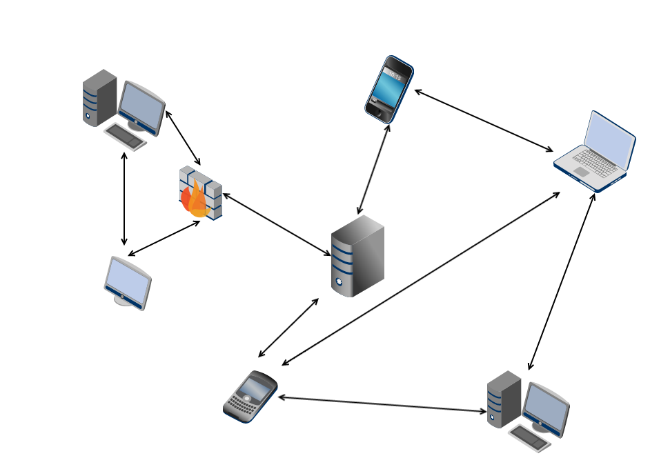

Decentralizing the Internet
The Grand Vision
 In the early days of the Internet it was incredibly rare for normal users to have persistent, always-on connections. This limitation was addressed by servers, computers that were always on and always connected to the Internet, which served as an intermediary for communication between users. This server-client paradigm shaped the architecture of the Internet, and still dominates web communication today.
However, with the penetration of always-on broadband and data-enabled cell-phones, coupled with the emergence of IPv6, which includes mobile IP, there is no longer a technologi- cal limitation which requires servers. The computers in our pockets have over a 99% uptime and connectivity! In- deed, centralized servers have many drawbacks, ranging from privacy, security, and fault-tolerance, to even energy-efficiency and control over data. An example centralized system is shown in Figure 1. By decentralizing the Internet we could make it much robust to failure, much more secure; furthermore we could do away with many energy-hungry server-farms, and reclaim control of personal data.
While the idea of using our phones as personal servers is rather straightforward, it still raises many technical barriers. How do we ensure reachability? What happens if the cell- phone loses connectivity? What if it is lost/broken/stolen? We need to find novel methods to ensure redundancy for both uptime and data. To address these issues we propose building a small cluster consisting of your personal devices (home computer, laptop, even router) possibly combined with friends and family devices to guarantee reliability and connectivity.
In light of this, we propose to build a first generation decentralized architecture which supports typical personal communication and applications including:
- Webpages
- Social Networking